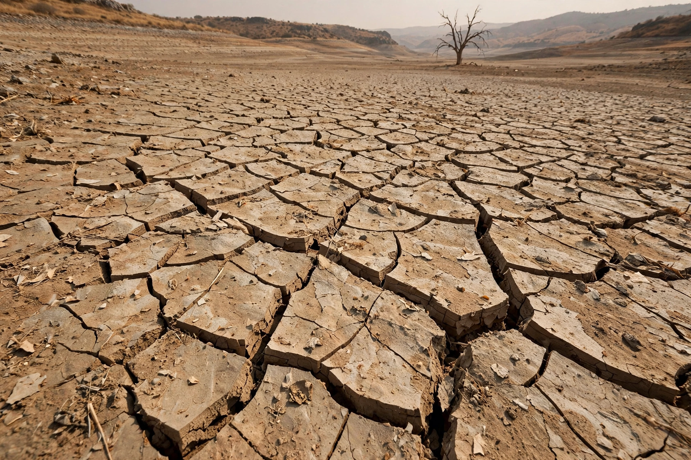

Drought

A drought is a prolonged period of abnormally dry conditions that depletes water supplies and damages ecosystems, agriculture and economies. Unlike a flood or storm, a drought has no clear beginning or end; it creeps.
Scientists distinguish meteorological drought (lack of rain), agricultural drought (soil moisture too low for crops), hydrological drought (low rivers, reservoirs and groundwater) and socioeconomic drought, when water shortage bites into people's lives.
Causes and measurement
Droughts arise from persistent atmospheric patterns — blocking high pressure, shifts in sea-surface temperatures such as {L('El_Niño')} and La Niña, and failed monsoons — and are deepened by heat, which evaporates moisture faster, and by human overuse of rivers and aquifers. Indices such as the Palmer Drought Severity Index and satellite monitoring of soil moisture and vegetation track drought's development.
Famous droughts include the American Dust Bowl of the 1930s, which drove ecological collapse and mass migration; the Sahel droughts of the 1970s–80s; Australia's Millennium Drought; and California's 2012–2016 drought. Cape Town's 'Day Zero' water crisis of 2018 showed a major city approaching the limits of supply.
Climate change and response
Warming raises evaporative demand almost everywhere, so drought risk is increasing in many regions even where rainfall changes little; some regions, notably the Mediterranean and south-western North America, face robust drying trends. Responses include reservoirs and groundwater banking, drought plans and restrictions, drought-tolerant crops, and demand management. See Water cycle and Natural disaster.
See also: Water cycle · Climate change · Natural disaster · Flood · Agriculture